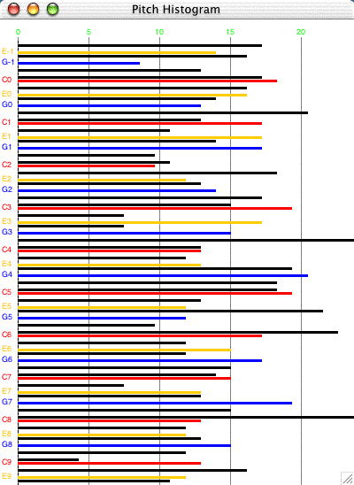

Histogram
The Histogram class can display a graph of how frequently particular
note attributes occur within a score.
For example you can see the number of times each pitch value is represented
in the score.
Feedback from histograms can be useful in providing information to a composer
about trends and tendencies in the music. It can also be useful for analysis.
| Note data from the score is displayed as a series
of horizontal bars. The Histogram class can produce graphs for any note pitch, rhythmValue, dynamic values, and pan values. To show several values, create several histograms. Colours are used to help identify particular values within the
histogram. In the pitch histogram, shown at the right, each c
pitch is red, each E is orange, and each G is blue. other notes
are in black - all chromatic pitches can be displayed. To create a histogram from any jMusic score use this code: View.histogram(myScore); Make sure to import the jm.util.View class! For more details and a full example see the code and comments below. Here is a link to the source file for the example class. This test program creates one thousand jMusic notes and displays the resulting score as a series of histograms, like the one shown above. |
 |
Let's have a closer look.
import jm.music.data.*; |
Inside the HistogramTest Java class.
This program first imports the JMC class to allow access to the jMusic constants, also the jm.music.data package to gain access to the Score, Part, Phrase and Note classes and, lastly, the jm.util.View class which has a histogram method we wish to utilise.
import jm.music.data.*; |
All details of this class are in one main() method. The first section of this method creates a Score to be analysed. It generates 1000 notes with random pitches, rhythmValues, dynamics and pan values. To make the pitches a bit more interesting they are limited to only be within the C major scale.
public static void main(String[] args) {
|
To view the score as a histogram the View.histogram() method is called.
it is called several times to show the variety of histograms that can
be displyed.
Notice that the constructor which only takes a Score argument defaults
to showing a histogram of pitches.
The others add constructor arguments indicating that rhythm, dynamic or
pan values should be mapped.
Constant values from the JMC are used, they are always in UPPER case.
The final two arguments specify an x,y coordinate at which the the histogram
widow will appear.
View.histogram(s); |
This code will generate four different histogram windows. Give it a try, then add histogram generation to some of your own jMusic classes.
Saving data
The data from the histogram analysis can be saved as a tab-delimitered text file using the following code, after importing the jm.gui.histogram.Histogram; class:
Histogram h = new Histogram(myScore);
h.saveData();